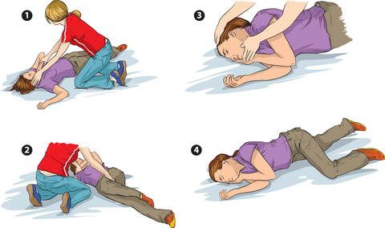
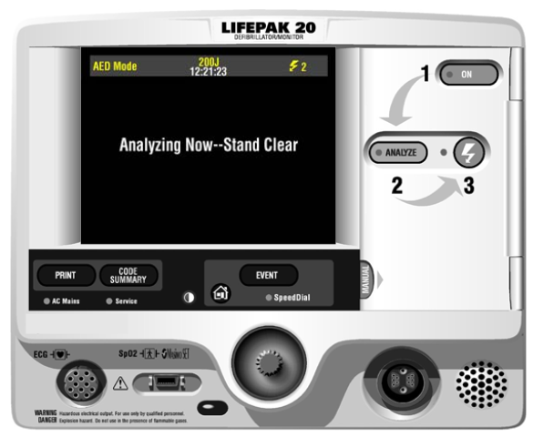

CPR : CHILD
When you find a child unresponsive:
- Check the scene for danger
- The first step is to check for responsiveness. "Are you ok?"
- If he is not responding, open the airway using head tilt chin lift.
- Listen and feel for breathing
- In no breathing , give two breaths, each breath is for one second. Look for a chest rise with each breath
- No check the carotid pulse
- If no pulse, start chest compressions. Place the heel of your hand over the breastbone, at the nipple line. Give 30 chest compressions, then give two breaths. Continue this 30:2 cycle. If there are two rescuers, you should instead use 15 chest compressions for 2 breaths.
- If there is no response, call 911, or call a code if you are in the hospital. Get a defibrillator if available.
- Open the airway using a headtilt chin lift
- Check pulse, and while doing that, look for breathing. Use only 5-10 seconds for this, and do it simultaneously.
- If not breathing and no pulse* : start CHEST COMPRESSIONS, 100-120 compressions per minute. Depth of compression should be 2 inches (1/3 of anteroposterior diameter) . Allow complete chest recoil after each compression. Do Head tilt Chin lift (AIRWAY) for delivering breaths. If only one rescuer, alternate 30 compressions and two BREATHS. If two rescuers alternate 15 compressions and two breaths. Use a barrier device and give two breaths. Each breath should last only one second. Look for chest rise with each breath.If possible rotate rescuers every 2 minutes.
- If patient not breathing but pulse present : do Head tilt-Chin lift and give one breaths every 5-6 seconds, ie 10-12 per minute. If a bag mask device is used, give a breath every 3-5 seconds.
- Check pulse every 2 minutes. If pulse is lost go to chest compression and breaths combination as above. If pulse rate is <60/mt continue chest compression and breaths.
- Once pulse returns and he starts breathing on his own, roll him into recovery position. Here is how you do it: Extend his left arm. Cross his right leg over his left leg. Turn his body and head to the left, so that he is laying on his left side with his head resting on his left arm, his body propped up by his right arm and right leg. 
- While giving CPR remember to minimize any pauses to 10 seconds or less.
-
Once you have the AED available and he
still does not have a pulse, do the
following steps:

- Turn it ON
- Attach the electrode pads to the patient's chest. one pad is placed over the front of the chest and the other pad over the back of the chest. This antero-posterior placement is best in children.
- Press ANALYSE, Analyze the rhythm
- If the device advises shock (it advises shock only for Vfib)
- Stand clear
- SHOCK
- Resume CPR until prompted by AED to allow rhythm check
- After 2 minutes, the AED will start the cycle all over again.
- If it says "shock not advised", it means the rhythm is not Vfib, so we continue CPR
- Continue CPR until ACLS available / EMS arrives.
*If a infant who is not breathing a pulse <60/mt is considered on par with NO pulse.
Agonal breaths are on par with no breathing.


Read Other Page
Read All Page
Ventricular Fibrillation
It this was an unwitnessed arrest, meaning it did not happen in front of you, you should give him 5 cycles of CPR...
Read More
Infant Cpr
Perform 30 chest compressions. Use two fingers and deliver the compressions over the breastbone, just below the nipple line...
Read More

Cpr General Principles
CPR sequence is Compressions- Airway - Breathing. The only exception is drowning victims where the sequence is...
Read More